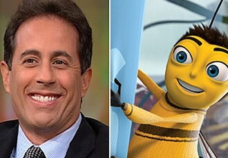

Production & Release
The development of Bee Movie began when Steven Spielberg approached DreamWorks Animation CEO and co-founder Jeffrey Katzenberg after Jerry Seinfeld asked him to make an animated film featuring insects. Production began in 2003. Seinfeld spent a week in Los Angeles working on it. Teleconferencing system HP Halo was installed in Seinfeld's office in New York, enabling him to work on the film and interact between coasts. Seinfeld said he set the film in New York because it was "the Tigris and Euphrates of comedy", and Katzenberg was the main reason for making the film. The budget was approximately $150 million. Spielberg was in two live-action trailers of this film in November 2006 and early 2007 where he interacted with Seinfeld, who wore a bee costume.